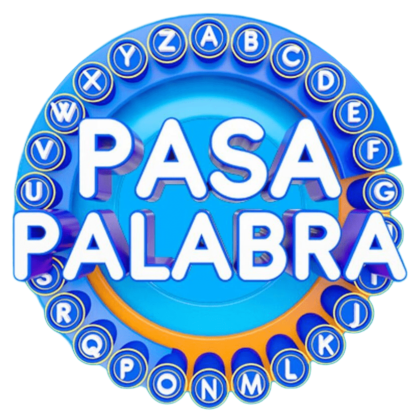

Empieza por A
¿Preparado para escuchar?
Buscando una versión disponible…
Máximo 2 escuchas por canción
Fragmentos promocionales proporcionados por cortesía de iTunes.

Escucha cinco segundos, di el título y completa el rosco. En cada partida cambian las canciones.
Empieza por A
Buscando una versión disponible…
Fragmentos promocionales proporcionados por cortesía de iTunes.